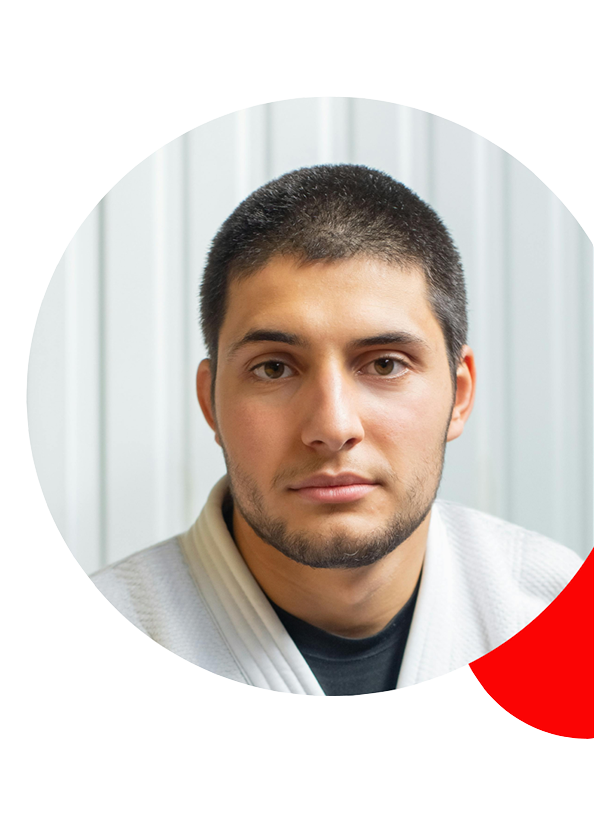

Jiu-Jitsu
Jiu-jitsu is een van de oudst bekende vormen van ongewapende zelfverdediging die ook fysiek minder sterke personen in
staat stelt sterkere tegenstanders te overwinnen. Het geheim zit hem namelijk niet in de kracht die men uit dient te
oefenen, maar in het overnemen van de beweging van de tegenstander en het benutten van de zwakke plekken van het lichaam
van de tegenstander. Dit maakt het beoefenen van jiu-jitsu ook uitstekend geschikt voor dames.
Het is een methode waarmee men zich in de praktijk tegen ongewapende en ook tegen gewapende tegenstanders, met succes
kan verdedigen. Binnen het jiu-jitsu wordt altijd uitgegaan van een agressor die een aanval inzet en waartegen de
jiu-jitsuka zich dient te verdedigen. Vanuit het jiu-jitsu komen diverse andere budosporten voort, zoals het judo,
karate en aikido. Bij de Benoordenhoutse Judoschool trainen zowel dames als heren hun conditie en verdedigende vaardigheden.
Lessen
Er is een aparte lesgroep voor jeugd tot 13 jaar. Tijdens deze lessen staat het plezierig en verantwoord beoefenen van
een budosport centraal en wordt er gewerkt aan het verbeteren van de motorische vaardigheden. Het jeugd jiu-jitsu is
aangepast aan de leeftijd hetgeen wil zeggen dat alle technieken waarbij een nauwkeurige controle vereist is, zoals bij
diverse klemtechnieken, de oefening wordt aangepast zodat de kans op blessures zo goed als uitgesloten is. Binnen de
lessen wordt aandacht besteed aan omgangsvormen, controle en beheersing en tevens aan het vergroten van het
zelfvertrouwen. De kinderen leren zich weerbaar op te stellen en voor zichzelf op te komen.
Er wordt een opleidingsprogramma aangeboden waarin de oefenstof is verdeeld over diverse graduaties. Iedere hogere,
landelijk erkende, graad tot en met de bruine band kan men behalen door het met goed gevolg afleggen van een
vaardigheidsexamen binnen de eigen sportschool, door onze rijkserkende examinatoren. Dan-examens vinden regionaal
plaats op voordracht van onze eigen leraren. De lessen staan onder leiding van Theo van Pomeren (6e dan jiu-jitsu) en
Peter van Deventer (4e dan jiu-jitsu).
Er wordt een opleidingsprogramma aangeboden waarin de oefenstof is verdeeld over diverse graduaties. Iedere hogere,
landelijk erkende, graad tot en met de bruine band kan men behalen door het met goed gevolg afleggen van een
vaardigheidsexamen binnen de eigen sportschool, door onze rijkserkende examinatoren. Dan-examens vinden regionaal
plaats op voordracht van onze eigen leraren. De lessen staan onder leiding van Theo van Pomeren (6e dan jiu-jitsu)
en Peter van Deventer (4e dan jiu-jitsu).
Leraar John
Ik hoop dat jullie klaar zijn voor een avontuur vol zelfontdekking en persoonlijke groei. Mijn naam is John en ik zal
jullie begeleiden op het pad van Jiu-Jitsu. Net als jullie ben ik gepassioneerd door deze eeuwenoude krijgskunst en ik
kan niet wachten om samen met jullie de fascinerende wereld van balans, techniek en discipline te verkennen. Laten we
samen werken aan kracht, vaardigheid en respect voor elkaar. Zet je schrap voor een reis vol uitdagingen en triomfen.
Laten we samen de kracht van Jiu-Jitsu omarmen en ons laten inspireren door elkaars groei. Laten we beginnen!
